Forget Xavier Initialization: ZerO Initialization Is Here
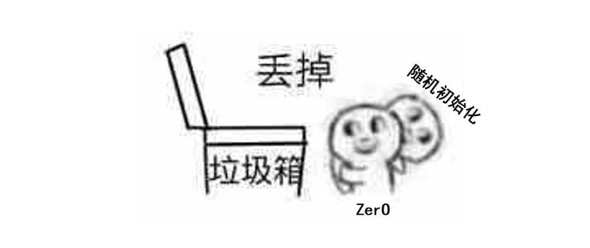
When we think about the most typical workflow for training a deep-learning model, what comes to mind? Given a problem and a dataset, we work through the choice of neural-network architecture, tune hyperparameters, randomly initialize the parameters, iterate through training, evaluate the results, and repeat until a model is finally produced.
If we look carefully at this pipeline, much of its randomness is concentrated in parameter initialization. Why do we initialize parameters randomly in the first place? Gradient descent needs some initial values for the weights. If we simply initialize every weight to zero, as one might in a basic linear model, symmetry can prevent different neurons from learning distinct features. Random initialization provides a practical way out.
But “random” is a vague idea, and both theory and experience show that the quality of random weight initialization can have a major effect on the convergence of a neural network. Parameters that are too large may lead to exploding gradients; parameters that are too small may produce vanishing gradients; and poorly controlled variance can make training unstable. Reasonable and standardized parameter scaling is therefore extremely important, which is one reason normalization methods have become so prominent in deep learning.
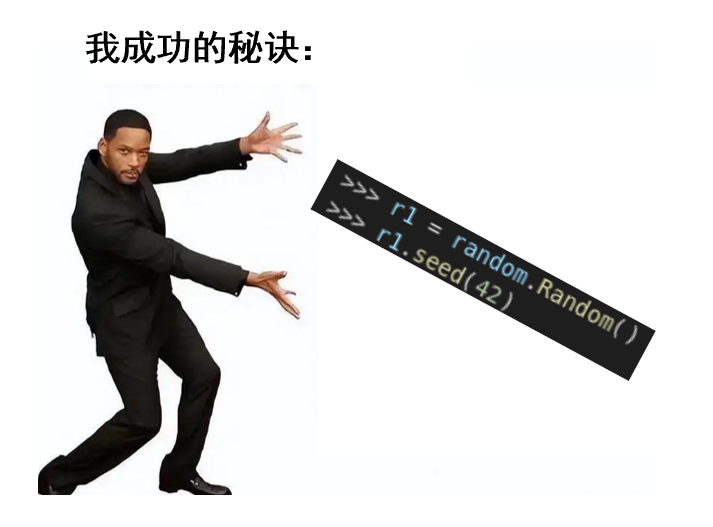
These empirical principles gave rise to many random initialization schemes, including Xavier and He initialization. Most of their advantages come from maintaining a well-behaved variance through the network. They largely address the problem of stability, but they do not eliminate randomness itself. The random seed can therefore become a strange kind of additional “hyperparameter.”
The paper discussed here changes the question entirely: if we could construct a completely deterministic initialization that still satisfies the requirements for signal propagation and gradient descent, could we eliminate the weaknesses of random initialization and perhaps even obtain better performance?
This TMLR paper proposes an initialization method called ZerO, which initializes networks using only zeros and ones. Without Batch Normalization, it can still train networks hundreds of layers deep. Applied to ResNets, it achieves state-of-the-art results on several datasets and demonstrates a number of advantages that arise specifically from deterministic initialization.
Paper:
ZerO Initialization: Initializing Neural Networks with only Zeros
and Ones
Link:
https://openreview.net/pdf?id=1AxQpKmiTc
1. Starting from Identity Initialization
A central difficulty in random initialization is keeping the variance of signals from changing dramatically across neural-network layers. One simple idea is to make the transformation between layers preserve the input as directly as possible. If every layer initially passes the previous layer’s signal through unchanged, variance no longer needs to be carefully balanced.
That naturally suggests initializing a neural-network weight matrix as an identity matrix, a strategy known as identity initialization.
Identity initialization has an attractive theoretical property called dynamical isometry, introduced by Saxe and collaborators in 2014. Roughly speaking, when the singular values of the input-output Jacobian remain close to one, the network has stable signal propagation and stable gradient behavior, which should make optimization easier. An identity matrix naturally satisfies this condition.
The problem is that the elegant theory of identity initialization usually assumes that adjacent layers have the same dimensionality. In real networks that assumption is often too restrictive.
A natural extension is therefore a partial identity matrix: preserve the identity structure where the dimensions overlap and fill the remaining entries with zeros.
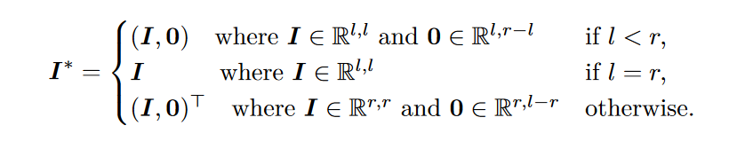
However, when partial identity matrices are used to initialize standard architectures such as ResNets, a phenomenon known as training degeneracy often appears.
The paper’s analysis shows that under partial-identity initialization, the effective rank of hidden representations can remain constrained by the dimensionality of the input, no matter how wide the hidden layers are. In other words, even if the network contains a very large hidden dimension, the useful representation can still be trapped in a much lower-dimensional subspace determined by the input. This severely limits the expressive power of the network.
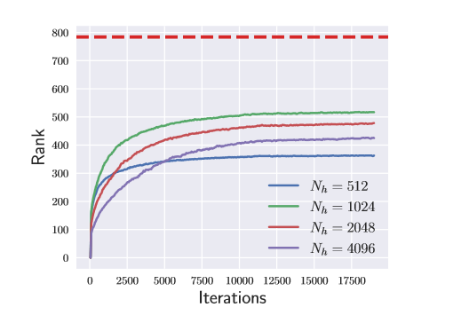
The figure above shows a three-layer neural network trained on MNIST with partial-identity initialization. The red dashed line marks the input dimensionality, 784. No matter how large the hidden representation is, its rank remains below the dimensionality of the input throughout training.
2. Hadamard Transforms and ZerO
To avoid the training degeneracy produced by directly using partial identity matrices, the authors propose applying a Hadamard transform when initializing the weights.
Hadamard matrices are familiar in areas such as image and video coding. Their entries consist only of +1 and −1, and their rows and columns are mutually orthogonal up to scaling. They can also be constructed recursively.
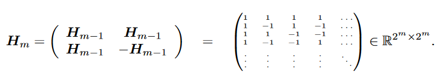
A Hadamard transform is simply a linear transformation based on a Hadamard matrix. Intuitively, in a two-dimensional plane it can be viewed as rotating the standard coordinate axes by 45 degrees. The authors show that applying a Hadamard transform to the partial identity structure can effectively eliminate the damaging training-degeneracy behavior.
The key idea is intuitive. The degeneracy of a partial identity matrix mainly comes from padding with zeros: those zero positions prevent some components of the signal from contributing after the activation function. This keeps the representation trapped in a restricted dimensional structure. The Hadamard transform “rotates” the basis vectors and breaks the symmetry created by those zeros, allowing information to spread across dimensions and avoiding the degeneracy.
There are many possible ways to perform such a rotation, but the authors argue that the Hadamard transform is a particularly natural choice. The figure below shows how the transform breaks the rank bottleneck in the same three-layer MNIST example.
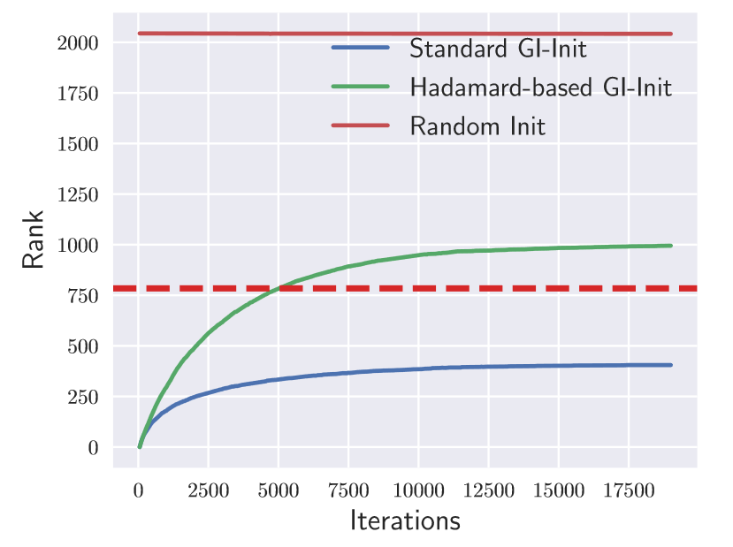
Combining the Hadamard transform with the idea of identity initialization gives the ZerO initialization method. The complete procedure is illustrated below.
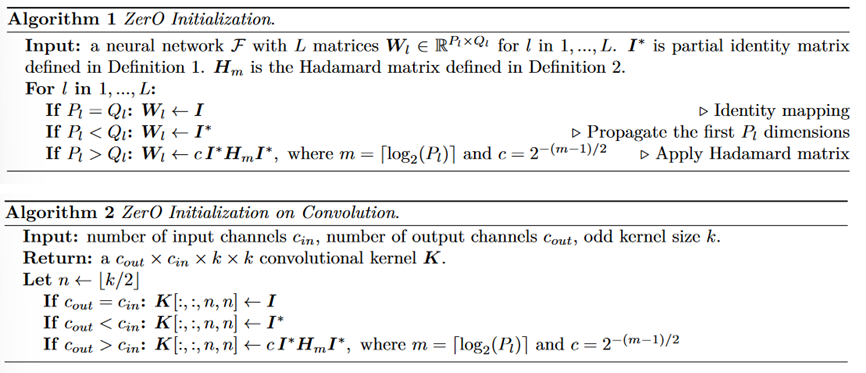
3. Numerical Experiments
The paper evaluates ZerO initialization by training ResNet-18 and ResNet-50 on CIFAR-10 and ImageNet. The results are shown below.
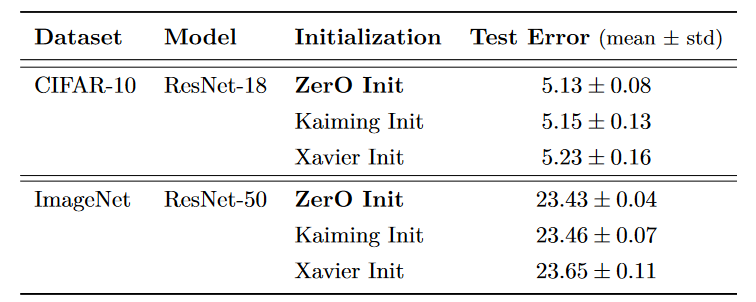
Compared with Kaiming initialization and Xavier initialization, ZerO achieves lower test error on both datasets.
The authors also compare ZerO against several other initialization methods. On both ResNet-18 and ResNet-50, ZerO achieves stronger performance.
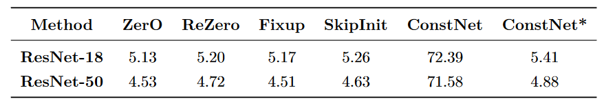
ZerO can also support substantially deeper networks. Without Batch Normalization, the method successfully trains a 500-layer ResNet on CIFAR-10.
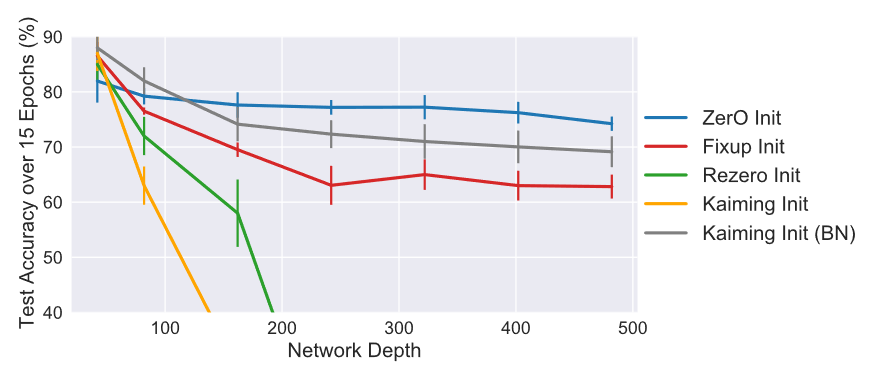
Finally, the authors successfully apply ZerO to Transformers. They use ZerO to initialize weights in multi-head attention and feed-forward layers, while fixing selected attention matrices to identity or zero as required by the construction. On WikiText-2, ZerO is able to train a 20-layer Transformer and, in most settings, outperforms standard initialization.
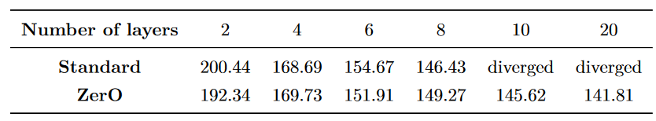
Overall, ZerO shows attractive properties in hyperparameter sensitivity, trainable network depth, and other dimensions. Because the initialization is deterministic, repeated training runs also vary less than they do under random initialization, making models trained with ZerO more reproducible.
4. Greedy Low-Rank Learning
Beyond its practical performance, the authors observe an even more interesting phenomenon during training with ZerO: a low-rank learning trajectory. Hints of this behavior already appear in the earlier figures.
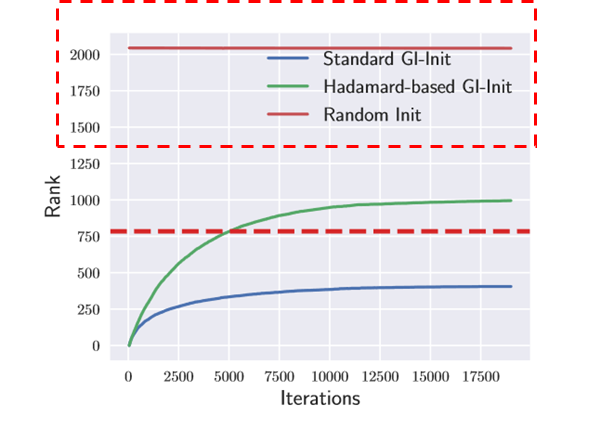
Training from Hadamard-based deterministic weights looks very different from training from random weights. Instead of starting immediately with a relatively “complex” network whose weight matrices already have high rank, ZerO appears to begin with a simpler network and gradually increase its complexity during learning.
To quantify this behavior, the authors use the stable rank of the weight matrix as a proxy for network complexity. The figure below compares the stable ranks produced by ZerO and by random initialization methods.
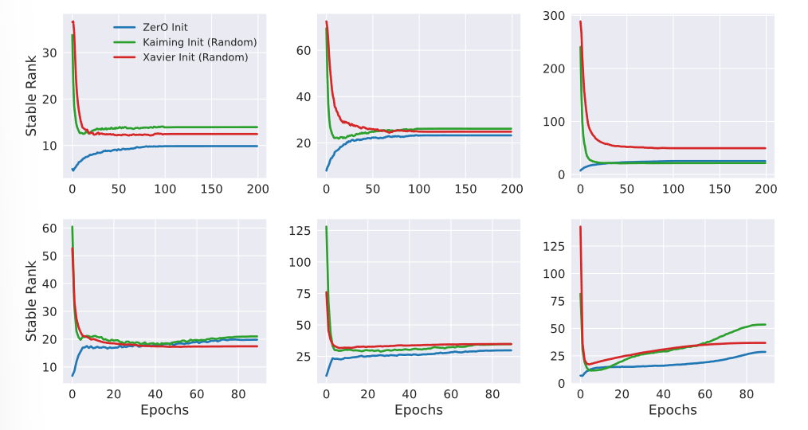
The upper row shows ResNet-18 trained on CIFAR-10; the lower row shows ResNet-50 trained on ImageNet. From left to right, the plots examine the first convolutional layer in the second, third, and fourth residual-block groups. ZerO initialization clearly exhibits low-rank learning behavior.
The authors describe this as the first observation in practical experiments of greedy low-rank learning (GLRL). GLRL is a theoretical property associated with gradient descent: under certain limiting initialization assumptions, gradient descent implicitly prefers simpler solutions. It tends to search the solution space in order of increasing matrix rank, moving to higher-rank regions only when lower-rank spaces cannot achieve a sufficiently good minimum.
GLRL can help explain why gradient-descent-trained neural networks often generalize surprisingly well and why they frequently converge to low-rank local or global optima. Previous theoretical derivations relied on idealized initialization assumptions that are difficult to realize experimentally. ZerO provides evidence that similar low-rank learning behavior can emerge under a practical deterministic initialization based on identity structure.
5. Conclusions and Reflections
Theoretical research on deep neural networks is developing rapidly. In a sense, this paper is an example of engineering exploration guided directly by neural-network theory. It begins with the desirable dynamical-isometry properties of identity initialization, extends the idea using Hadamard transforms, obtains a high-performing initialization method, and then uses that method to reveal GLRL behavior in realistic experiments.
Neural-network theory is still far from being the kind of solid, unified edifice we associate with mature areas of physics. But this paper shows that theory can already provide useful guidance from above.
Instead of treating deep-learning training like repetitive assembly-line work—tightening the same screws and bolts again and again—it can be far more rewarding to step outside the fixed recipe and ask how the machines inside the entire factory are actually operating. That may require a little more mathematics, but understanding an unknown black box is also part of the fun of studying neural networks.